GLM: 1st-level Analysis#

The objective in this example is to model the timecourse of each voxel. This will allow us to answer question regarding to the voxel response to different stimuli.
We will model the activation at each voxel \(y\) as a weighed sum of explanatory variables \(x_{i}\) and error term \({\epsilon}\)
or in matrix notation
which can be solved with Ordinary Least Squares regression.
The parameters \({\beta}\) represent the contribution of each variable to the voxel activation.
The error terms are assumed to be independent and identically distributed.

The matrix 𝑋 is also called design matrix. It is up to the researcher which factors to include in the design matrix. The design matrix contains factors that a related to the hypothesis the researcher want to answer. Furthermore, sometimes in it are also included factors that are not related to the hypothesis, but are know sources of variability (nuisance factors).
Hemodynamic response#
Now lets take a look how we take into account the delayed Blood-Oxygen-Level-Dependent (BOLD) response. The hemodynamic response function might look something like this:
import numpy as np
import matplotlib.pyplot as plt
def hrf(t):
return t ** 8.6 * np.exp(-t / 0.547)
hrf_times = np.arange(0, 20, 0.1)
hrf_signal = hrf(hrf_times)
plt.plot(hrf_times, hrf_signal)
plt.xlabel('time')
plt.ylabel('BOLD signal')
_ = plt.title('HRF')
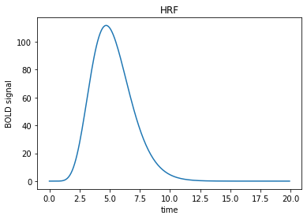
In the design often we want to include variables, that indicate presence or absence of a stimuli. Let’s say we had the 3 stimuli during the timecourse
n_time_points = 40
times = np.arange(0, n_time_points)
neural_signal = np.zeros(n_time_points)
neural_signal[4:6] = 1 # A 3 second event
neural_signal[9:11] = 1
neural_signal[22:24] = 1
plt.plot(times, neural_signal)
plt.xlabel('time (seconds)')
plt.ylabel('neural signal')
plt.ylim(0, 3.2)
_ = plt.title('Neural model for three impulses')
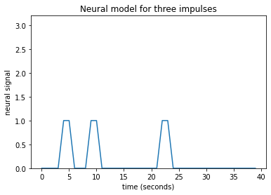
Next we have to convolve signal with our hrf function
hrf_times = np.arange(20)
hrf_signal = hrf(hrf_times)
bold_signal = np.convolve(neural_signal, hrf_signal)
tailed_respose_times = np.arange(n_time_points + hrf_times.shape[0] - 1)
plt.plot(tailed_respose_times, bold_signal)
plt.xlabel('time (seconds)')
plt.ylabel('bold signal')
_ = plt.title('Convolved signals')
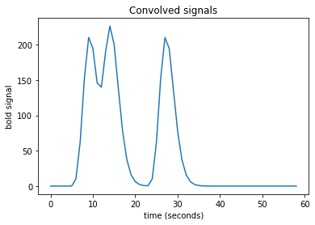
After that we can fit our fMRI data to the design Matrix and use GLM for hypotesis testing. We can evaluate whether a given factor \(i\) has a considerable contribution by its coefficient \({\beta}_{i}\). With t-test we can evaluate whether \({\beta}_{i}\) > 0. We can also test hypothesis of the form \({\beta}_{i}\) > \({\beta}_{j}\).
The general form of the hypothesis tests which forms a contrast is: $\(\sum \limits _{i=1} ^{P} c_{i}{\beta}_{i} > 0 \)$
Typical values for \(c\) are 1 and -1. Typically contrasts are express as: \([c_{1}, c_{2}, ..., c_{N}]\).
For example the contrast [1, 0] tests \({\beta}_{1}\) > 0.
This contrasts form a t-statistics (Recall that \(\frac{c^T \beta}{SE(c^T \beta)}\) in OLS regression follow \(t\)-distribution with \(n-p-1\) degrees of freedom).
We can combine several contrasts and form F-statistics. In the contexts of fMRI the F-tests help us answer questions like “Is effect A or effect B or effect C, or any combination of them, significantly non-zero?”.
Recall that F-test is used for comparison between reduced model \(RF\) and full model \(FM\): $\( F = \frac{(SSE(RM)-SSE(FM)) /(k_{FM}-k_{RM}))}{SSE(FM)/(n-k_{FM})} \)$
where \(SSE\) - the sum of squared errors, \(n\) - number of time points, \(k\) - the number of model distinct parameters.
Combining the test results from all voxels we get statistical map of brain activity. Now that the theory out of our way we can see how it is done in Nipype.
1st Level Analysis in Nipype#
We will use the preprocessed files generated in the previous step and perform a first‑level (single‑subject) GLM analysis for each participant. The analysis will follow this steps:
Extract stimulus onsets, durations, and condition labels (Finger, Foot, Lips) from the
task-fingerfootlips_events.tsvfile.Build the design matrix
Set key parameters of SPM model
Include nuisance regressors
Convolve the event regressors with the canonical HRF to model the hemodynamic response shape.
Estimate the GLM
Solve the equation \(y = X·β + ε\) for each voxel using ordinary least squares (OLS).
Obtain beta maps – the estimated contribution of each predictor to the BOLD signal.
Define and estimate contrasts
Specify a set of T‑contrasts to test directed hypotheses:
Average activation across all three conditions (Finger + Foot + Lips).
Each condition separately (Finger, Foot, Lips).
Specify an F‑contrast to test for any condition effect.
Compute statistical maps (T‑maps and F‑maps) and effect size maps.
Store results for each subject.
Visualise and quality‑check
import pandas as pd
import os
from nilearn import plotting
%matplotlib inline
from nipype.interfaces.spm import Level1Design, EstimateModel, EstimateContrast
from nipype.algorithms.modelgen import SpecifySPMModel
from nipype.interfaces.utility import Function, IdentityInterface
from nipype.interfaces.io import SelectFiles, DataSink
from nipype import Workflow, Node
from utils import list_files
# specify paths
experiment_dir = '/output'
output_dir = 'datasink'
working_dir = 'workingdir'
# list of subject identifiers
subject_list = ['01', '02', '03', '04', '05', '06', '07', '08', '09', '10']
# subject_list = ['01', '02']
# Repetition time(TR) of functional images
TR = 2.5
Question: What is Repetition time (TR) and why it is important? How to get this value?
Prepare design matrix#
Let’s take a look how the stimuli onset and duration look like.This information is store in a tsv file. This file will help us build the design matrix.
The three different conditions in the fingerfootlips task are:
finger
foot
lips
trialinfo = pd.read_table('/data/ds000114/task-fingerfootlips_events.tsv')
trialinfo.head()
| onset | duration | weight | trial_type | |
|---|---|---|---|---|
| 0 | 10 | 15.0 | 1 | Finger |
| 1 | 40 | 15.0 | 1 | Foot |
| 2 | 70 | 15.0 | 1 | Lips |
| 3 | 100 | 15.0 | 1 | Finger |
| 4 | 130 | 15.0 | 1 | Foot |
def subjectinfo(subject_id):
import pandas as pd
from nipype.interfaces.base import Bunch
trialinfo = pd.read_table('/data/ds000114/task-fingerfootlips_events.tsv')
#trialinfo.head()
conditions = []
onsets = []
durations = []
for group in trialinfo.groupby('trial_type'):
conditions.append(group[0])
onsets.append(list(group[1].onset - 10)) # subtracting 10s due to removing of 4 dummy scans
durations.append(group[1].duration.tolist())
# Bunch is a dictionary-like class that provides attribute-style access to it’s items.
subject_info = [Bunch(conditions=conditions,
onsets=onsets,
durations=durations
)]
return subject_info # this output will later be returned to infosource
# Get Subject Info - get subject specific condition information
getsubjectinfo = Node(Function(input_names=['subject_id'],
output_names=['subject_info'],
function=subjectinfo),
name='getsubjectinfo')
Initiate Nodes#
# SpecifyModel - Generates SPM (Statistical parametric mapping)- specific Model
#Setup
#https://nipype.readthedocs.io/en/latest/api/generated/nipype.algorithms.modelgen.html
modelspec = Node(SpecifySPMModel(concatenate_runs=False,
input_units='secs',
output_units='secs',
time_repetition=TR,
high_pass_filter_cutoff=128),
name="modelspec")
# Level1Design - Generates an SPM design matrix
#https://www.fil.ion.ucl.ac.uk/spm/doc/manual.pdf #page=73
#hrf- Name of basis function(canonical)
#'derivs': [1, 0]-Time derivatives : Time and Dispersion (additional regressors for SPM)
#model_serial_correlations-serial correlations using an autoregressive estimator (order 1)
level1design = Node(Level1Design(bases={'hrf': {'derivs': [1, 0]}},
timing_units='secs',
interscan_interval=TR,
model_serial_correlations='AR(1)'),
name="level1design")
# EstimateModel - estimate the parameters of the model
#https://www.fil.ion.ucl.ac.uk/spm/doc/manual.pdf#page=69
level1estimate = Node(EstimateModel(estimation_method={'Classical': 1}),
name="level1estimate")
# EstimateContrast - estimates contrasts
level1conest = Node(EstimateContrast(), name="level1conest")
Specify contrasts#
We are gona perform several T tests and one F test. Recall the general form of the hypothesis are
# Condition names
condition_names = ['Finger', 'Foot', 'Lips']
# Contrasts
# contrast = [<contrast_name>, <test>, <condition_names>, <[c1, c2, c3]>]
cont01 = ['average', 'T', condition_names, [1/3., 1/3., 1/3.]]
cont02 = ['Finger', 'T', condition_names, [1, 0, 0]] # FINGER > 0
cont03 = ['Foot', 'T', condition_names, [0, 1, 0]] # FOOT > 0
cont04 = ['Lips', 'T', condition_names, [0, 0, 1]] # LIPS > 0
cont05 = ['Foot > others', 'T', condition_names, [-0.5, 1, -0.5]] # FOOT > (FINGER + LIPS) / 2
cont06 = ['activation', 'F', [cont02, cont03, cont04]] # if any
contrast_list = [cont01, cont02, cont03, cont04, cont05, cont06]
# After this step we got T critical for the t-statistics
Specify input & output stream#
Specify where the input data can be found & where and how to save the output data.
#Infosource - a function free node to iterate over the list of subject names
infosource = Node(IdentityInterface(fields=['subject_id',
'contrasts'],
contrasts=contrast_list),
name="infosource")
infosource.iterables = [('subject_id', subject_list)]
# SelectFiles - to grab the data (alternativ to DataGrabber)
templates = {
'func': 'datasink/preproc/sub-{subject_id}/task-{task_id}/fwhm-5_ssub-{subject_id}_ses-test_task-{task_id}_bold.nii',
'mc_param': 'datasink/preproc/sub-{subject_id}/task-{task_id}/sub-{subject_id}_ses-test_task-{task_id}_bold.par',
'outliers': 'datasink/preproc/sub-{subject_id}/task-{task_id}/art.sub-{subject_id}_ses-test_task-{task_id}_bold_outliers.txt'
}
selectfiles = Node(SelectFiles(templates,
base_directory=experiment_dir,
sort_filelist=True),
name="selectfiles")
selectfiles.inputs.task_id = 'fingerfootlips'
# Datasink - creates output folder for important outputs
datasink = Node(DataSink(base_directory=experiment_dir,
container=output_dir),
name="datasink")
# Use the following DataSink output substitutions
substitutions = [('_subject_id_', 'sub-')]
datasink.inputs.substitutions = substitutions
Specify Workflow#
Create a workflow and connect the interface nodes and the I/O stream to each other.
# Initiation of the 1st-level analysis workflow
l1analysis = Workflow(name='l1analysis')
l1analysis.base_dir = f'{experiment_dir}/{working_dir}'
# Connect up the 1st-level analysis components
l1analysis.connect([(infosource, selectfiles, [('subject_id', 'subject_id')]),
(infosource, getsubjectinfo, [('subject_id',
'subject_id')]),
(getsubjectinfo, modelspec, [('subject_info',
'subject_info')]),
(infosource, level1conest, [('contrasts', 'contrasts')]),
(selectfiles, modelspec, [('func', 'functional_runs')]),
(selectfiles, modelspec, [('mc_param', 'realignment_parameters'),
('outliers', 'outlier_files')]),
(modelspec, level1design, [('session_info',
'session_info')]),
(level1design, level1estimate, [('spm_mat_file',
'spm_mat_file')]),
(level1estimate, level1conest, [('spm_mat_file',
'spm_mat_file'),
('beta_images',
'beta_images'),
('residual_image',
'residual_image')]),
(level1conest, datasink, [('spm_mat_file', '1stLevel.@spm_mat'),
('spmT_images', '1stLevel.@T'),
('con_images', '1stLevel.@con'),
('spmF_images', '1stLevel.@F'),
('ess_images', '1stLevel.@ess'),
]),
])
Visualize the workflow#
# Save the 1st-level analysis graph as png
l1analysis.write_graph(graph2use='colored', format='png', simple_form=True)
# Visualize the graph
from IPython.display import Image
Image(filename=f'{l1analysis.base_dir}/l1analysis/graph.png')
260805-13:55:17,114 nipype.workflow INFO:
Generated workflow graph: /output/workingdir/l1analysis/graph.png (graph2use=colored, simple_form=True).
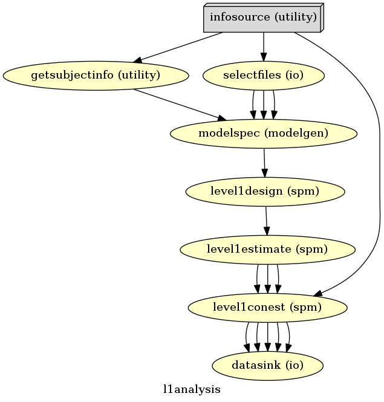
# show detailed workflow
l1analysis.write_graph(graph2use='flat', format='png', simple_form=True)
Image(filename=f'{l1analysis.base_dir}/l1analysis/graph_detailed.png')
260805-13:55:39,4 nipype.workflow INFO:
Generated workflow graph: /output/workingdir/l1analysis/graph.png (graph2use=flat, simple_form=True).
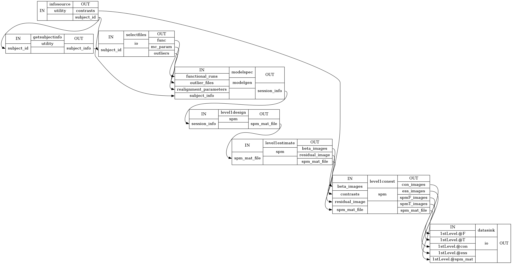
Run the Workflow#
Run the 1st-level analysis workflow. Run with ‘Linear’ plugin if multiprocessing failed.
l1analysis.run('Linear')
260805-13:55:51,72 nipype.workflow INFO:
Workflow l1analysis settings: ['check', 'execution', 'logging', 'monitoring']
260805-13:55:51,139 nipype.workflow INFO:
Running serially.
260805-13:55:51,141 nipype.workflow INFO:
[Node] Setting-up "l1analysis.getsubjectinfo" in "/output/workingdir/l1analysis/_subject_id_10/getsubjectinfo".
260805-13:55:51,144 nipype.workflow INFO:
[Node] Running "getsubjectinfo" ("nipype.interfaces.utility.wrappers.Function")
260805-13:55:51,159 nipype.workflow INFO:
[Node] Finished "l1analysis.getsubjectinfo".
260805-13:55:51,160 nipype.workflow INFO:
[Node] Setting-up "l1analysis.selectfiles" in "/output/workingdir/l1analysis/_subject_id_10/selectfiles".
260805-13:55:51,165 nipype.workflow INFO:
[Node] Running "selectfiles" ("nipype.interfaces.io.SelectFiles")
260805-13:55:51,173 nipype.workflow INFO:
[Node] Finished "l1analysis.selectfiles".
260805-13:55:51,174 nipype.workflow INFO:
[Node] Setting-up "l1analysis.modelspec" in "/output/workingdir/l1analysis/_subject_id_10/modelspec".
260805-13:55:51,182 nipype.workflow INFO:
[Node] Running "modelspec" ("nipype.algorithms.modelgen.SpecifySPMModel")
260805-13:55:51,208 nipype.workflow INFO:
[Node] Finished "l1analysis.modelspec".
260805-13:55:51,212 nipype.workflow INFO:
[Node] Setting-up "l1analysis.level1design" in "/output/workingdir/l1analysis/_subject_id_10/level1design".
260805-13:55:51,250 nipype.workflow INFO:
[Node] Running "level1design" ("nipype.interfaces.spm.model.Level1Design")
260805-13:56:04,111 nipype.workflow INFO:
[Node] Finished "l1analysis.level1design".
260805-13:56:04,113 nipype.workflow INFO:
[Node] Setting-up "l1analysis.level1estimate" in "/output/workingdir/l1analysis/_subject_id_10/level1estimate".
260805-13:56:04,121 nipype.workflow INFO:
[Node] Running "level1estimate" ("nipype.interfaces.spm.model.EstimateModel")
260805-13:56:17,815 nipype.workflow INFO:
[Node] Finished "l1analysis.level1estimate".
260805-13:56:17,817 nipype.workflow INFO:
[Node] Setting-up "l1analysis.level1conest" in "/output/workingdir/l1analysis/_subject_id_10/level1conest".
260805-13:56:17,835 nipype.workflow INFO:
[Node] Running "level1conest" ("nipype.interfaces.spm.model.EstimateContrast")
260805-13:56:26,971 nipype.workflow INFO:
[Node] Finished "l1analysis.level1conest".
260805-13:56:26,973 nipype.workflow INFO:
[Node] Setting-up "l1analysis.datasink" in "/output/workingdir/l1analysis/_subject_id_10/datasink".
260805-13:56:26,986 nipype.workflow INFO:
[Node] Running "datasink" ("nipype.interfaces.io.DataSink")
260805-13:56:26,988 nipype.interface INFO:
sub: /output/datasink/1stLevel/_subject_id_10/SPM.mat -> /output/datasink/1stLevel/sub-10/SPM.mat
260805-13:56:26,990 nipype.interface INFO:
sub: /output/datasink/1stLevel/_subject_id_10/spmT_0001.nii -> /output/datasink/1stLevel/sub-10/spmT_0001.nii
260805-13:56:26,993 nipype.interface INFO:
sub: /output/datasink/1stLevel/_subject_id_10/spmT_0002.nii -> /output/datasink/1stLevel/sub-10/spmT_0002.nii
260805-13:56:26,994 nipype.interface INFO:
sub: /output/datasink/1stLevel/_subject_id_10/spmT_0003.nii -> /output/datasink/1stLevel/sub-10/spmT_0003.nii
260805-13:56:26,996 nipype.interface INFO:
sub: /output/datasink/1stLevel/_subject_id_10/spmT_0004.nii -> /output/datasink/1stLevel/sub-10/spmT_0004.nii
260805-13:56:26,998 nipype.interface INFO:
sub: /output/datasink/1stLevel/_subject_id_10/spmT_0005.nii -> /output/datasink/1stLevel/sub-10/spmT_0005.nii
260805-13:56:27,0 nipype.interface INFO:
sub: /output/datasink/1stLevel/_subject_id_10/spmF_0006.nii -> /output/datasink/1stLevel/sub-10/spmF_0006.nii
260805-13:56:27,2 nipype.interface INFO:
sub: /output/datasink/1stLevel/_subject_id_10/con_0001.nii -> /output/datasink/1stLevel/sub-10/con_0001.nii
260805-13:56:27,4 nipype.interface INFO:
sub: /output/datasink/1stLevel/_subject_id_10/con_0002.nii -> /output/datasink/1stLevel/sub-10/con_0002.nii
260805-13:56:27,5 nipype.interface INFO:
sub: /output/datasink/1stLevel/_subject_id_10/con_0003.nii -> /output/datasink/1stLevel/sub-10/con_0003.nii
260805-13:56:27,7 nipype.interface INFO:
sub: /output/datasink/1stLevel/_subject_id_10/con_0004.nii -> /output/datasink/1stLevel/sub-10/con_0004.nii
260805-13:56:27,10 nipype.interface INFO:
sub: /output/datasink/1stLevel/_subject_id_10/con_0005.nii -> /output/datasink/1stLevel/sub-10/con_0005.nii
260805-13:56:27,12 nipype.interface INFO:
sub: /output/datasink/1stLevel/_subject_id_10/ess_0006.nii -> /output/datasink/1stLevel/sub-10/ess_0006.nii
260805-13:56:27,14 nipype.interface INFO:
sub: /output/datasink/1stLevel/_subject_id_10/spmF_0006.nii -> /output/datasink/1stLevel/sub-10/spmF_0006.nii
260805-13:56:27,16 nipype.interface INFO:
sub: /output/datasink/1stLevel/_subject_id_10/ess_0006.nii -> /output/datasink/1stLevel/sub-10/ess_0006.nii
260805-13:56:27,22 nipype.workflow INFO:
[Node] Finished "l1analysis.datasink".
260805-13:56:27,23 nipype.workflow INFO:
[Node] Setting-up "l1analysis.getsubjectinfo" in "/output/workingdir/l1analysis/_subject_id_09/getsubjectinfo".
260805-13:56:27,29 nipype.workflow INFO:
[Node] Running "getsubjectinfo" ("nipype.interfaces.utility.wrappers.Function")
260805-13:56:27,46 nipype.workflow INFO:
[Node] Finished "l1analysis.getsubjectinfo".
260805-13:56:27,48 nipype.workflow INFO:
[Node] Setting-up "l1analysis.selectfiles" in "/output/workingdir/l1analysis/_subject_id_09/selectfiles".
260805-13:56:27,52 nipype.workflow INFO:
[Node] Running "selectfiles" ("nipype.interfaces.io.SelectFiles")
260805-13:56:27,63 nipype.workflow INFO:
[Node] Finished "l1analysis.selectfiles".
260805-13:56:27,65 nipype.workflow INFO:
[Node] Setting-up "l1analysis.modelspec" in "/output/workingdir/l1analysis/_subject_id_09/modelspec".
260805-13:56:27,78 nipype.workflow INFO:
[Node] Running "modelspec" ("nipype.algorithms.modelgen.SpecifySPMModel")
260805-13:56:27,119 nipype.workflow INFO:
[Node] Finished "l1analysis.modelspec".
260805-13:56:27,121 nipype.workflow INFO:
[Node] Setting-up "l1analysis.level1design" in "/output/workingdir/l1analysis/_subject_id_09/level1design".
260805-13:56:27,169 nipype.workflow INFO:
[Node] Running "level1design" ("nipype.interfaces.spm.model.Level1Design")
260805-13:56:35,733 nipype.workflow INFO:
[Node] Finished "l1analysis.level1design".
260805-13:56:35,735 nipype.workflow INFO:
[Node] Setting-up "l1analysis.level1estimate" in "/output/workingdir/l1analysis/_subject_id_09/level1estimate".
260805-13:56:35,744 nipype.workflow INFO:
[Node] Running "level1estimate" ("nipype.interfaces.spm.model.EstimateModel")
260805-13:56:49,50 nipype.workflow INFO:
[Node] Finished "l1analysis.level1estimate".
260805-13:56:49,52 nipype.workflow INFO:
[Node] Setting-up "l1analysis.level1conest" in "/output/workingdir/l1analysis/_subject_id_09/level1conest".
260805-13:56:49,81 nipype.workflow INFO:
[Node] Running "level1conest" ("nipype.interfaces.spm.model.EstimateContrast")
260805-13:56:58,50 nipype.workflow INFO:
[Node] Finished "l1analysis.level1conest".
260805-13:56:58,52 nipype.workflow INFO:
[Node] Setting-up "l1analysis.datasink" in "/output/workingdir/l1analysis/_subject_id_09/datasink".
260805-13:56:58,60 nipype.workflow INFO:
[Node] Running "datasink" ("nipype.interfaces.io.DataSink")
260805-13:56:58,62 nipype.interface INFO:
sub: /output/datasink/1stLevel/_subject_id_09/SPM.mat -> /output/datasink/1stLevel/sub-09/SPM.mat
260805-13:56:58,64 nipype.interface INFO:
sub: /output/datasink/1stLevel/_subject_id_09/spmT_0001.nii -> /output/datasink/1stLevel/sub-09/spmT_0001.nii
260805-13:56:58,66 nipype.interface INFO:
sub: /output/datasink/1stLevel/_subject_id_09/spmT_0002.nii -> /output/datasink/1stLevel/sub-09/spmT_0002.nii
260805-13:56:58,68 nipype.interface INFO:
sub: /output/datasink/1stLevel/_subject_id_09/spmT_0003.nii -> /output/datasink/1stLevel/sub-09/spmT_0003.nii
260805-13:56:58,71 nipype.interface INFO:
sub: /output/datasink/1stLevel/_subject_id_09/spmT_0004.nii -> /output/datasink/1stLevel/sub-09/spmT_0004.nii
260805-13:56:58,75 nipype.interface INFO:
sub: /output/datasink/1stLevel/_subject_id_09/spmT_0005.nii -> /output/datasink/1stLevel/sub-09/spmT_0005.nii
260805-13:56:58,77 nipype.interface INFO:
sub: /output/datasink/1stLevel/_subject_id_09/spmF_0006.nii -> /output/datasink/1stLevel/sub-09/spmF_0006.nii
260805-13:56:58,79 nipype.interface INFO:
sub: /output/datasink/1stLevel/_subject_id_09/con_0001.nii -> /output/datasink/1stLevel/sub-09/con_0001.nii
260805-13:56:58,81 nipype.interface INFO:
sub: /output/datasink/1stLevel/_subject_id_09/con_0002.nii -> /output/datasink/1stLevel/sub-09/con_0002.nii
260805-13:56:58,83 nipype.interface INFO:
sub: /output/datasink/1stLevel/_subject_id_09/con_0003.nii -> /output/datasink/1stLevel/sub-09/con_0003.nii
260805-13:56:58,85 nipype.interface INFO:
sub: /output/datasink/1stLevel/_subject_id_09/con_0004.nii -> /output/datasink/1stLevel/sub-09/con_0004.nii
260805-13:56:58,86 nipype.interface INFO:
sub: /output/datasink/1stLevel/_subject_id_09/con_0005.nii -> /output/datasink/1stLevel/sub-09/con_0005.nii
260805-13:56:58,88 nipype.interface INFO:
sub: /output/datasink/1stLevel/_subject_id_09/ess_0006.nii -> /output/datasink/1stLevel/sub-09/ess_0006.nii
260805-13:56:58,90 nipype.interface INFO:
sub: /output/datasink/1stLevel/_subject_id_09/spmF_0006.nii -> /output/datasink/1stLevel/sub-09/spmF_0006.nii
260805-13:56:58,91 nipype.interface INFO:
sub: /output/datasink/1stLevel/_subject_id_09/ess_0006.nii -> /output/datasink/1stLevel/sub-09/ess_0006.nii
260805-13:56:58,97 nipype.workflow INFO:
[Node] Finished "l1analysis.datasink".
260805-13:56:58,98 nipype.workflow INFO:
[Node] Setting-up "l1analysis.getsubjectinfo" in "/output/workingdir/l1analysis/_subject_id_08/getsubjectinfo".
260805-13:56:58,102 nipype.workflow INFO:
[Node] Running "getsubjectinfo" ("nipype.interfaces.utility.wrappers.Function")
260805-13:56:58,122 nipype.workflow INFO:
[Node] Finished "l1analysis.getsubjectinfo".
260805-13:56:58,124 nipype.workflow INFO:
[Node] Setting-up "l1analysis.selectfiles" in "/output/workingdir/l1analysis/_subject_id_08/selectfiles".
260805-13:56:58,128 nipype.workflow INFO:
[Node] Running "selectfiles" ("nipype.interfaces.io.SelectFiles")
260805-13:56:58,136 nipype.workflow INFO:
[Node] Finished "l1analysis.selectfiles".
260805-13:56:58,137 nipype.workflow INFO:
[Node] Setting-up "l1analysis.modelspec" in "/output/workingdir/l1analysis/_subject_id_08/modelspec".
260805-13:56:58,152 nipype.workflow INFO:
[Node] Running "modelspec" ("nipype.algorithms.modelgen.SpecifySPMModel")
260805-13:56:58,180 nipype.workflow INFO:
[Node] Finished "l1analysis.modelspec".
260805-13:56:58,182 nipype.workflow INFO:
[Node] Setting-up "l1analysis.level1design" in "/output/workingdir/l1analysis/_subject_id_08/level1design".
260805-13:56:58,213 nipype.workflow INFO:
[Node] Running "level1design" ("nipype.interfaces.spm.model.Level1Design")
/opt/miniconda-latest/envs/neuro/lib/python3.6/site-packages/nipype/algorithms/modelgen.py:511: UserWarning: loadtxt: Empty input file: "/output/workingdir/l1analysis/_subject_id_08/modelspec/art.sub-08_ses-test_task-fingerfootlips_bold_outliers.txt"
outindices = np.loadtxt(filename, dtype=int)
260805-13:57:07,292 nipype.workflow INFO:
[Node] Finished "l1analysis.level1design".
260805-13:57:07,294 nipype.workflow INFO:
[Node] Setting-up "l1analysis.level1estimate" in "/output/workingdir/l1analysis/_subject_id_08/level1estimate".
260805-13:57:07,303 nipype.workflow INFO:
[Node] Running "level1estimate" ("nipype.interfaces.spm.model.EstimateModel")
260805-13:57:20,55 nipype.workflow INFO:
[Node] Finished "l1analysis.level1estimate".
260805-13:57:20,57 nipype.workflow INFO:
[Node] Setting-up "l1analysis.level1conest" in "/output/workingdir/l1analysis/_subject_id_08/level1conest".
260805-13:57:20,123 nipype.workflow INFO:
[Node] Running "level1conest" ("nipype.interfaces.spm.model.EstimateContrast")
260805-13:57:28,740 nipype.workflow INFO:
[Node] Finished "l1analysis.level1conest".
260805-13:57:28,741 nipype.workflow INFO:
[Node] Setting-up "l1analysis.datasink" in "/output/workingdir/l1analysis/_subject_id_08/datasink".
260805-13:57:28,749 nipype.workflow INFO:
[Node] Running "datasink" ("nipype.interfaces.io.DataSink")
260805-13:57:28,751 nipype.interface INFO:
sub: /output/datasink/1stLevel/_subject_id_08/SPM.mat -> /output/datasink/1stLevel/sub-08/SPM.mat
260805-13:57:28,802 nipype.interface INFO:
sub: /output/datasink/1stLevel/_subject_id_08/spmT_0001.nii -> /output/datasink/1stLevel/sub-08/spmT_0001.nii
260805-13:57:28,803 nipype.interface INFO:
sub: /output/datasink/1stLevel/_subject_id_08/spmT_0002.nii -> /output/datasink/1stLevel/sub-08/spmT_0002.nii
260805-13:57:28,804 nipype.interface INFO:
sub: /output/datasink/1stLevel/_subject_id_08/spmT_0003.nii -> /output/datasink/1stLevel/sub-08/spmT_0003.nii
260805-13:57:28,806 nipype.interface INFO:
sub: /output/datasink/1stLevel/_subject_id_08/spmT_0004.nii -> /output/datasink/1stLevel/sub-08/spmT_0004.nii
260805-13:57:28,808 nipype.interface INFO:
sub: /output/datasink/1stLevel/_subject_id_08/spmT_0005.nii -> /output/datasink/1stLevel/sub-08/spmT_0005.nii
260805-13:57:28,809 nipype.interface INFO:
sub: /output/datasink/1stLevel/_subject_id_08/spmF_0006.nii -> /output/datasink/1stLevel/sub-08/spmF_0006.nii
260805-13:57:28,811 nipype.interface INFO:
sub: /output/datasink/1stLevel/_subject_id_08/con_0001.nii -> /output/datasink/1stLevel/sub-08/con_0001.nii
260805-13:57:28,813 nipype.interface INFO:
sub: /output/datasink/1stLevel/_subject_id_08/con_0002.nii -> /output/datasink/1stLevel/sub-08/con_0002.nii
260805-13:57:28,816 nipype.interface INFO:
sub: /output/datasink/1stLevel/_subject_id_08/con_0003.nii -> /output/datasink/1stLevel/sub-08/con_0003.nii
260805-13:57:28,818 nipype.interface INFO:
sub: /output/datasink/1stLevel/_subject_id_08/con_0004.nii -> /output/datasink/1stLevel/sub-08/con_0004.nii
260805-13:57:28,820 nipype.interface INFO:
sub: /output/datasink/1stLevel/_subject_id_08/con_0005.nii -> /output/datasink/1stLevel/sub-08/con_0005.nii
260805-13:57:28,822 nipype.interface INFO:
sub: /output/datasink/1stLevel/_subject_id_08/ess_0006.nii -> /output/datasink/1stLevel/sub-08/ess_0006.nii
260805-13:57:28,824 nipype.interface INFO:
sub: /output/datasink/1stLevel/_subject_id_08/spmF_0006.nii -> /output/datasink/1stLevel/sub-08/spmF_0006.nii
260805-13:57:28,825 nipype.interface INFO:
sub: /output/datasink/1stLevel/_subject_id_08/ess_0006.nii -> /output/datasink/1stLevel/sub-08/ess_0006.nii
260805-13:57:28,831 nipype.workflow INFO:
[Node] Finished "l1analysis.datasink".
260805-13:57:28,832 nipype.workflow INFO:
[Node] Setting-up "l1analysis.getsubjectinfo" in "/output/workingdir/l1analysis/_subject_id_07/getsubjectinfo".
260805-13:57:28,836 nipype.workflow INFO:
[Node] Running "getsubjectinfo" ("nipype.interfaces.utility.wrappers.Function")
260805-13:57:28,848 nipype.workflow INFO:
[Node] Finished "l1analysis.getsubjectinfo".
260805-13:57:28,849 nipype.workflow INFO:
[Node] Setting-up "l1analysis.selectfiles" in "/output/workingdir/l1analysis/_subject_id_07/selectfiles".
260805-13:57:28,853 nipype.workflow INFO:
[Node] Running "selectfiles" ("nipype.interfaces.io.SelectFiles")
260805-13:57:28,861 nipype.workflow INFO:
[Node] Finished "l1analysis.selectfiles".
260805-13:57:28,862 nipype.workflow INFO:
[Node] Setting-up "l1analysis.modelspec" in "/output/workingdir/l1analysis/_subject_id_07/modelspec".
260805-13:57:28,871 nipype.workflow INFO:
[Node] Running "modelspec" ("nipype.algorithms.modelgen.SpecifySPMModel")
260805-13:57:28,894 nipype.workflow INFO:
[Node] Finished "l1analysis.modelspec".
260805-13:57:28,895 nipype.workflow INFO:
[Node] Setting-up "l1analysis.level1design" in "/output/workingdir/l1analysis/_subject_id_07/level1design".
260805-13:57:28,930 nipype.workflow INFO:
[Node] Running "level1design" ("nipype.interfaces.spm.model.Level1Design")
/opt/miniconda-latest/envs/neuro/lib/python3.6/site-packages/nipype/algorithms/modelgen.py:511: UserWarning: loadtxt: Empty input file: "/output/workingdir/l1analysis/_subject_id_07/modelspec/art.sub-07_ses-test_task-fingerfootlips_bold_outliers.txt"
outindices = np.loadtxt(filename, dtype=int)
260805-13:57:36,623 nipype.workflow INFO:
[Node] Finished "l1analysis.level1design".
260805-13:57:36,625 nipype.workflow INFO:
[Node] Setting-up "l1analysis.level1estimate" in "/output/workingdir/l1analysis/_subject_id_07/level1estimate".
260805-13:57:36,688 nipype.workflow INFO:
[Node] Running "level1estimate" ("nipype.interfaces.spm.model.EstimateModel")
260805-13:57:47,824 nipype.workflow INFO:
[Node] Finished "l1analysis.level1estimate".
260805-13:57:47,825 nipype.workflow INFO:
[Node] Setting-up "l1analysis.level1conest" in "/output/workingdir/l1analysis/_subject_id_07/level1conest".
260805-13:57:47,841 nipype.workflow INFO:
[Node] Running "level1conest" ("nipype.interfaces.spm.model.EstimateContrast")
260805-13:57:57,115 nipype.workflow INFO:
[Node] Finished "l1analysis.level1conest".
260805-13:57:57,116 nipype.workflow INFO:
[Node] Setting-up "l1analysis.datasink" in "/output/workingdir/l1analysis/_subject_id_07/datasink".
260805-13:57:57,123 nipype.workflow INFO:
[Node] Running "datasink" ("nipype.interfaces.io.DataSink")
260805-13:57:57,126 nipype.interface INFO:
sub: /output/datasink/1stLevel/_subject_id_07/SPM.mat -> /output/datasink/1stLevel/sub-07/SPM.mat
260805-13:57:57,127 nipype.interface INFO:
sub: /output/datasink/1stLevel/_subject_id_07/spmT_0001.nii -> /output/datasink/1stLevel/sub-07/spmT_0001.nii
260805-13:57:57,128 nipype.interface INFO:
sub: /output/datasink/1stLevel/_subject_id_07/spmT_0002.nii -> /output/datasink/1stLevel/sub-07/spmT_0002.nii
260805-13:57:57,130 nipype.interface INFO:
sub: /output/datasink/1stLevel/_subject_id_07/spmT_0003.nii -> /output/datasink/1stLevel/sub-07/spmT_0003.nii
260805-13:57:57,131 nipype.interface INFO:
sub: /output/datasink/1stLevel/_subject_id_07/spmT_0004.nii -> /output/datasink/1stLevel/sub-07/spmT_0004.nii
260805-13:57:57,133 nipype.interface INFO:
sub: /output/datasink/1stLevel/_subject_id_07/spmT_0005.nii -> /output/datasink/1stLevel/sub-07/spmT_0005.nii
260805-13:57:57,134 nipype.interface INFO:
sub: /output/datasink/1stLevel/_subject_id_07/spmF_0006.nii -> /output/datasink/1stLevel/sub-07/spmF_0006.nii
260805-13:57:57,136 nipype.interface INFO:
sub: /output/datasink/1stLevel/_subject_id_07/con_0001.nii -> /output/datasink/1stLevel/sub-07/con_0001.nii
260805-13:57:57,137 nipype.interface INFO:
sub: /output/datasink/1stLevel/_subject_id_07/con_0002.nii -> /output/datasink/1stLevel/sub-07/con_0002.nii
260805-13:57:57,138 nipype.interface INFO:
sub: /output/datasink/1stLevel/_subject_id_07/con_0003.nii -> /output/datasink/1stLevel/sub-07/con_0003.nii
260805-13:57:57,139 nipype.interface INFO:
sub: /output/datasink/1stLevel/_subject_id_07/con_0004.nii -> /output/datasink/1stLevel/sub-07/con_0004.nii
260805-13:57:57,140 nipype.interface INFO:
sub: /output/datasink/1stLevel/_subject_id_07/con_0005.nii -> /output/datasink/1stLevel/sub-07/con_0005.nii
260805-13:57:57,142 nipype.interface INFO:
sub: /output/datasink/1stLevel/_subject_id_07/ess_0006.nii -> /output/datasink/1stLevel/sub-07/ess_0006.nii
260805-13:57:57,143 nipype.interface INFO:
sub: /output/datasink/1stLevel/_subject_id_07/spmF_0006.nii -> /output/datasink/1stLevel/sub-07/spmF_0006.nii
260805-13:57:57,145 nipype.interface INFO:
sub: /output/datasink/1stLevel/_subject_id_07/ess_0006.nii -> /output/datasink/1stLevel/sub-07/ess_0006.nii
260805-13:57:57,150 nipype.workflow INFO:
[Node] Finished "l1analysis.datasink".
260805-13:57:57,151 nipype.workflow INFO:
[Node] Setting-up "l1analysis.getsubjectinfo" in "/output/workingdir/l1analysis/_subject_id_06/getsubjectinfo".
260805-13:57:57,155 nipype.workflow INFO:
[Node] Running "getsubjectinfo" ("nipype.interfaces.utility.wrappers.Function")
260805-13:57:57,172 nipype.workflow INFO:
[Node] Finished "l1analysis.getsubjectinfo".
260805-13:57:57,173 nipype.workflow INFO:
[Node] Setting-up "l1analysis.selectfiles" in "/output/workingdir/l1analysis/_subject_id_06/selectfiles".
260805-13:57:57,177 nipype.workflow INFO:
[Node] Running "selectfiles" ("nipype.interfaces.io.SelectFiles")
260805-13:57:57,185 nipype.workflow INFO:
[Node] Finished "l1analysis.selectfiles".
260805-13:57:57,186 nipype.workflow INFO:
[Node] Setting-up "l1analysis.modelspec" in "/output/workingdir/l1analysis/_subject_id_06/modelspec".
260805-13:57:57,198 nipype.workflow INFO:
[Node] Running "modelspec" ("nipype.algorithms.modelgen.SpecifySPMModel")
260805-13:57:57,232 nipype.workflow INFO:
[Node] Finished "l1analysis.modelspec".
260805-13:57:57,233 nipype.workflow INFO:
[Node] Setting-up "l1analysis.level1design" in "/output/workingdir/l1analysis/_subject_id_06/level1design".
260805-13:57:57,267 nipype.workflow INFO:
[Node] Running "level1design" ("nipype.interfaces.spm.model.Level1Design")
/opt/miniconda-latest/envs/neuro/lib/python3.6/site-packages/nipype/algorithms/modelgen.py:511: UserWarning: loadtxt: Empty input file: "/output/workingdir/l1analysis/_subject_id_06/modelspec/art.sub-06_ses-test_task-fingerfootlips_bold_outliers.txt"
outindices = np.loadtxt(filename, dtype=int)
260805-13:58:05,616 nipype.workflow INFO:
[Node] Finished "l1analysis.level1design".
260805-13:58:05,619 nipype.workflow INFO:
[Node] Setting-up "l1analysis.level1estimate" in "/output/workingdir/l1analysis/_subject_id_06/level1estimate".
260805-13:58:05,681 nipype.workflow INFO:
[Node] Running "level1estimate" ("nipype.interfaces.spm.model.EstimateModel")
260805-13:58:18,588 nipype.workflow INFO:
[Node] Finished "l1analysis.level1estimate".
260805-13:58:18,590 nipype.workflow INFO:
[Node] Setting-up "l1analysis.level1conest" in "/output/workingdir/l1analysis/_subject_id_06/level1conest".
260805-13:58:18,604 nipype.workflow INFO:
[Node] Running "level1conest" ("nipype.interfaces.spm.model.EstimateContrast")
260805-13:58:27,325 nipype.workflow INFO:
[Node] Finished "l1analysis.level1conest".
260805-13:58:27,326 nipype.workflow INFO:
[Node] Setting-up "l1analysis.datasink" in "/output/workingdir/l1analysis/_subject_id_06/datasink".
260805-13:58:27,334 nipype.workflow INFO:
[Node] Running "datasink" ("nipype.interfaces.io.DataSink")
260805-13:58:27,336 nipype.interface INFO:
sub: /output/datasink/1stLevel/_subject_id_06/SPM.mat -> /output/datasink/1stLevel/sub-06/SPM.mat
260805-13:58:27,338 nipype.interface INFO:
sub: /output/datasink/1stLevel/_subject_id_06/spmT_0001.nii -> /output/datasink/1stLevel/sub-06/spmT_0001.nii
260805-13:58:27,339 nipype.interface INFO:
sub: /output/datasink/1stLevel/_subject_id_06/spmT_0002.nii -> /output/datasink/1stLevel/sub-06/spmT_0002.nii
260805-13:58:27,341 nipype.interface INFO:
sub: /output/datasink/1stLevel/_subject_id_06/spmT_0003.nii -> /output/datasink/1stLevel/sub-06/spmT_0003.nii
260805-13:58:27,342 nipype.interface INFO:
sub: /output/datasink/1stLevel/_subject_id_06/spmT_0004.nii -> /output/datasink/1stLevel/sub-06/spmT_0004.nii
260805-13:58:27,344 nipype.interface INFO:
sub: /output/datasink/1stLevel/_subject_id_06/spmT_0005.nii -> /output/datasink/1stLevel/sub-06/spmT_0005.nii
260805-13:58:27,345 nipype.interface INFO:
sub: /output/datasink/1stLevel/_subject_id_06/spmF_0006.nii -> /output/datasink/1stLevel/sub-06/spmF_0006.nii
260805-13:58:27,346 nipype.interface INFO:
sub: /output/datasink/1stLevel/_subject_id_06/con_0001.nii -> /output/datasink/1stLevel/sub-06/con_0001.nii
260805-13:58:27,347 nipype.interface INFO:
sub: /output/datasink/1stLevel/_subject_id_06/con_0002.nii -> /output/datasink/1stLevel/sub-06/con_0002.nii
260805-13:58:27,349 nipype.interface INFO:
sub: /output/datasink/1stLevel/_subject_id_06/con_0003.nii -> /output/datasink/1stLevel/sub-06/con_0003.nii
260805-13:58:27,350 nipype.interface INFO:
sub: /output/datasink/1stLevel/_subject_id_06/con_0004.nii -> /output/datasink/1stLevel/sub-06/con_0004.nii
260805-13:58:27,351 nipype.interface INFO:
sub: /output/datasink/1stLevel/_subject_id_06/con_0005.nii -> /output/datasink/1stLevel/sub-06/con_0005.nii
260805-13:58:27,352 nipype.interface INFO:
sub: /output/datasink/1stLevel/_subject_id_06/ess_0006.nii -> /output/datasink/1stLevel/sub-06/ess_0006.nii
260805-13:58:27,354 nipype.interface INFO:
sub: /output/datasink/1stLevel/_subject_id_06/spmF_0006.nii -> /output/datasink/1stLevel/sub-06/spmF_0006.nii
260805-13:58:27,355 nipype.interface INFO:
sub: /output/datasink/1stLevel/_subject_id_06/ess_0006.nii -> /output/datasink/1stLevel/sub-06/ess_0006.nii
260805-13:58:27,360 nipype.workflow INFO:
[Node] Finished "l1analysis.datasink".
260805-13:58:27,362 nipype.workflow INFO:
[Node] Setting-up "l1analysis.getsubjectinfo" in "/output/workingdir/l1analysis/_subject_id_05/getsubjectinfo".
260805-13:58:27,365 nipype.workflow INFO:
[Node] Running "getsubjectinfo" ("nipype.interfaces.utility.wrappers.Function")
260805-13:58:27,378 nipype.workflow INFO:
[Node] Finished "l1analysis.getsubjectinfo".
260805-13:58:27,379 nipype.workflow INFO:
[Node] Setting-up "l1analysis.selectfiles" in "/output/workingdir/l1analysis/_subject_id_05/selectfiles".
260805-13:58:27,383 nipype.workflow INFO:
[Node] Running "selectfiles" ("nipype.interfaces.io.SelectFiles")
260805-13:58:27,390 nipype.workflow INFO:
[Node] Finished "l1analysis.selectfiles".
260805-13:58:27,391 nipype.workflow INFO:
[Node] Setting-up "l1analysis.modelspec" in "/output/workingdir/l1analysis/_subject_id_05/modelspec".
260805-13:58:27,400 nipype.workflow INFO:
[Node] Running "modelspec" ("nipype.algorithms.modelgen.SpecifySPMModel")
260805-13:58:27,421 nipype.workflow INFO:
[Node] Finished "l1analysis.modelspec".
260805-13:58:27,422 nipype.workflow INFO:
[Node] Setting-up "l1analysis.level1design" in "/output/workingdir/l1analysis/_subject_id_05/level1design".
260805-13:58:27,456 nipype.workflow INFO:
[Node] Running "level1design" ("nipype.interfaces.spm.model.Level1Design")
260805-13:58:35,755 nipype.workflow INFO:
[Node] Finished "l1analysis.level1design".
260805-13:58:35,757 nipype.workflow INFO:
[Node] Setting-up "l1analysis.level1estimate" in "/output/workingdir/l1analysis/_subject_id_05/level1estimate".
260805-13:58:35,765 nipype.workflow INFO:
[Node] Running "level1estimate" ("nipype.interfaces.spm.model.EstimateModel")
260805-13:58:51,266 nipype.workflow INFO:
[Node] Finished "l1analysis.level1estimate".
260805-13:58:51,269 nipype.workflow INFO:
[Node] Setting-up "l1analysis.level1conest" in "/output/workingdir/l1analysis/_subject_id_05/level1conest".
260805-13:58:51,344 nipype.workflow INFO:
[Node] Running "level1conest" ("nipype.interfaces.spm.model.EstimateContrast")
260805-13:59:00,455 nipype.workflow INFO:
[Node] Finished "l1analysis.level1conest".
260805-13:59:00,456 nipype.workflow INFO:
[Node] Setting-up "l1analysis.datasink" in "/output/workingdir/l1analysis/_subject_id_05/datasink".
260805-13:59:00,464 nipype.workflow INFO:
[Node] Running "datasink" ("nipype.interfaces.io.DataSink")
260805-13:59:00,466 nipype.interface INFO:
sub: /output/datasink/1stLevel/_subject_id_05/SPM.mat -> /output/datasink/1stLevel/sub-05/SPM.mat
260805-13:59:00,467 nipype.interface INFO:
sub: /output/datasink/1stLevel/_subject_id_05/spmT_0001.nii -> /output/datasink/1stLevel/sub-05/spmT_0001.nii
260805-13:59:00,468 nipype.interface INFO:
sub: /output/datasink/1stLevel/_subject_id_05/spmT_0002.nii -> /output/datasink/1stLevel/sub-05/spmT_0002.nii
260805-13:59:00,470 nipype.interface INFO:
sub: /output/datasink/1stLevel/_subject_id_05/spmT_0003.nii -> /output/datasink/1stLevel/sub-05/spmT_0003.nii
260805-13:59:00,471 nipype.interface INFO:
sub: /output/datasink/1stLevel/_subject_id_05/spmT_0004.nii -> /output/datasink/1stLevel/sub-05/spmT_0004.nii
260805-13:59:00,472 nipype.interface INFO:
sub: /output/datasink/1stLevel/_subject_id_05/spmT_0005.nii -> /output/datasink/1stLevel/sub-05/spmT_0005.nii
260805-13:59:00,474 nipype.interface INFO:
sub: /output/datasink/1stLevel/_subject_id_05/spmF_0006.nii -> /output/datasink/1stLevel/sub-05/spmF_0006.nii
260805-13:59:00,475 nipype.interface INFO:
sub: /output/datasink/1stLevel/_subject_id_05/con_0001.nii -> /output/datasink/1stLevel/sub-05/con_0001.nii
260805-13:59:00,476 nipype.interface INFO:
sub: /output/datasink/1stLevel/_subject_id_05/con_0002.nii -> /output/datasink/1stLevel/sub-05/con_0002.nii
260805-13:59:00,477 nipype.interface INFO:
sub: /output/datasink/1stLevel/_subject_id_05/con_0003.nii -> /output/datasink/1stLevel/sub-05/con_0003.nii
260805-13:59:00,478 nipype.interface INFO:
sub: /output/datasink/1stLevel/_subject_id_05/con_0004.nii -> /output/datasink/1stLevel/sub-05/con_0004.nii
260805-13:59:00,480 nipype.interface INFO:
sub: /output/datasink/1stLevel/_subject_id_05/con_0005.nii -> /output/datasink/1stLevel/sub-05/con_0005.nii
260805-13:59:00,481 nipype.interface INFO:
sub: /output/datasink/1stLevel/_subject_id_05/ess_0006.nii -> /output/datasink/1stLevel/sub-05/ess_0006.nii
260805-13:59:00,482 nipype.interface INFO:
sub: /output/datasink/1stLevel/_subject_id_05/spmF_0006.nii -> /output/datasink/1stLevel/sub-05/spmF_0006.nii
260805-13:59:00,483 nipype.interface INFO:
sub: /output/datasink/1stLevel/_subject_id_05/ess_0006.nii -> /output/datasink/1stLevel/sub-05/ess_0006.nii
260805-13:59:00,487 nipype.workflow INFO:
[Node] Finished "l1analysis.datasink".
260805-13:59:00,488 nipype.workflow INFO:
[Node] Setting-up "l1analysis.getsubjectinfo" in "/output/workingdir/l1analysis/_subject_id_04/getsubjectinfo".
260805-13:59:00,491 nipype.workflow INFO:
[Node] Running "getsubjectinfo" ("nipype.interfaces.utility.wrappers.Function")
260805-13:59:00,502 nipype.workflow INFO:
[Node] Finished "l1analysis.getsubjectinfo".
260805-13:59:00,503 nipype.workflow INFO:
[Node] Setting-up "l1analysis.selectfiles" in "/output/workingdir/l1analysis/_subject_id_04/selectfiles".
260805-13:59:00,506 nipype.workflow INFO:
[Node] Running "selectfiles" ("nipype.interfaces.io.SelectFiles")
260805-13:59:00,518 nipype.workflow INFO:
[Node] Finished "l1analysis.selectfiles".
260805-13:59:00,519 nipype.workflow INFO:
[Node] Setting-up "l1analysis.modelspec" in "/output/workingdir/l1analysis/_subject_id_04/modelspec".
260805-13:59:00,528 nipype.workflow INFO:
[Node] Running "modelspec" ("nipype.algorithms.modelgen.SpecifySPMModel")
260805-13:59:00,554 nipype.workflow INFO:
[Node] Finished "l1analysis.modelspec".
260805-13:59:00,555 nipype.workflow INFO:
[Node] Setting-up "l1analysis.level1design" in "/output/workingdir/l1analysis/_subject_id_04/level1design".
260805-13:59:00,596 nipype.workflow INFO:
[Node] Running "level1design" ("nipype.interfaces.spm.model.Level1Design")
260805-13:59:09,130 nipype.workflow INFO:
[Node] Finished "l1analysis.level1design".
260805-13:59:09,133 nipype.workflow INFO:
[Node] Setting-up "l1analysis.level1estimate" in "/output/workingdir/l1analysis/_subject_id_04/level1estimate".
260805-13:59:09,145 nipype.workflow INFO:
[Node] Running "level1estimate" ("nipype.interfaces.spm.model.EstimateModel")
260805-13:59:21,682 nipype.workflow INFO:
[Node] Finished "l1analysis.level1estimate".
260805-13:59:21,684 nipype.workflow INFO:
[Node] Setting-up "l1analysis.level1conest" in "/output/workingdir/l1analysis/_subject_id_04/level1conest".
260805-13:59:21,700 nipype.workflow INFO:
[Node] Running "level1conest" ("nipype.interfaces.spm.model.EstimateContrast")
260805-13:59:30,998 nipype.workflow INFO:
[Node] Finished "l1analysis.level1conest".
260805-13:59:31,0 nipype.workflow INFO:
[Node] Setting-up "l1analysis.datasink" in "/output/workingdir/l1analysis/_subject_id_04/datasink".
260805-13:59:31,13 nipype.workflow INFO:
[Node] Running "datasink" ("nipype.interfaces.io.DataSink")
260805-13:59:31,19 nipype.interface INFO:
sub: /output/datasink/1stLevel/_subject_id_04/SPM.mat -> /output/datasink/1stLevel/sub-04/SPM.mat
260805-13:59:31,21 nipype.interface INFO:
sub: /output/datasink/1stLevel/_subject_id_04/spmT_0001.nii -> /output/datasink/1stLevel/sub-04/spmT_0001.nii
260805-13:59:31,24 nipype.interface INFO:
sub: /output/datasink/1stLevel/_subject_id_04/spmT_0002.nii -> /output/datasink/1stLevel/sub-04/spmT_0002.nii
260805-13:59:31,25 nipype.interface INFO:
sub: /output/datasink/1stLevel/_subject_id_04/spmT_0003.nii -> /output/datasink/1stLevel/sub-04/spmT_0003.nii
260805-13:59:31,28 nipype.interface INFO:
sub: /output/datasink/1stLevel/_subject_id_04/spmT_0004.nii -> /output/datasink/1stLevel/sub-04/spmT_0004.nii
260805-13:59:31,31 nipype.interface INFO:
sub: /output/datasink/1stLevel/_subject_id_04/spmT_0005.nii -> /output/datasink/1stLevel/sub-04/spmT_0005.nii
260805-13:59:31,32 nipype.interface INFO:
sub: /output/datasink/1stLevel/_subject_id_04/spmF_0006.nii -> /output/datasink/1stLevel/sub-04/spmF_0006.nii
260805-13:59:31,36 nipype.interface INFO:
sub: /output/datasink/1stLevel/_subject_id_04/con_0001.nii -> /output/datasink/1stLevel/sub-04/con_0001.nii
260805-13:59:31,40 nipype.interface INFO:
sub: /output/datasink/1stLevel/_subject_id_04/con_0002.nii -> /output/datasink/1stLevel/sub-04/con_0002.nii
260805-13:59:31,43 nipype.interface INFO:
sub: /output/datasink/1stLevel/_subject_id_04/con_0003.nii -> /output/datasink/1stLevel/sub-04/con_0003.nii
260805-13:59:31,48 nipype.interface INFO:
sub: /output/datasink/1stLevel/_subject_id_04/con_0004.nii -> /output/datasink/1stLevel/sub-04/con_0004.nii
260805-13:59:31,53 nipype.interface INFO:
sub: /output/datasink/1stLevel/_subject_id_04/con_0005.nii -> /output/datasink/1stLevel/sub-04/con_0005.nii
260805-13:59:31,58 nipype.interface INFO:
sub: /output/datasink/1stLevel/_subject_id_04/ess_0006.nii -> /output/datasink/1stLevel/sub-04/ess_0006.nii
260805-13:59:31,61 nipype.interface INFO:
sub: /output/datasink/1stLevel/_subject_id_04/spmF_0006.nii -> /output/datasink/1stLevel/sub-04/spmF_0006.nii
260805-13:59:31,63 nipype.interface INFO:
sub: /output/datasink/1stLevel/_subject_id_04/ess_0006.nii -> /output/datasink/1stLevel/sub-04/ess_0006.nii
260805-13:59:31,71 nipype.workflow INFO:
[Node] Finished "l1analysis.datasink".
260805-13:59:31,73 nipype.workflow INFO:
[Node] Setting-up "l1analysis.getsubjectinfo" in "/output/workingdir/l1analysis/_subject_id_03/getsubjectinfo".
260805-13:59:31,85 nipype.workflow INFO:
[Node] Running "getsubjectinfo" ("nipype.interfaces.utility.wrappers.Function")
260805-13:59:31,123 nipype.workflow INFO:
[Node] Finished "l1analysis.getsubjectinfo".
260805-13:59:31,125 nipype.workflow INFO:
[Node] Setting-up "l1analysis.selectfiles" in "/output/workingdir/l1analysis/_subject_id_03/selectfiles".
260805-13:59:31,136 nipype.workflow INFO:
[Node] Running "selectfiles" ("nipype.interfaces.io.SelectFiles")
260805-13:59:31,147 nipype.workflow INFO:
[Node] Finished "l1analysis.selectfiles".
260805-13:59:31,151 nipype.workflow INFO:
[Node] Setting-up "l1analysis.modelspec" in "/output/workingdir/l1analysis/_subject_id_03/modelspec".
260805-13:59:31,171 nipype.workflow INFO:
[Node] Running "modelspec" ("nipype.algorithms.modelgen.SpecifySPMModel")
260805-13:59:31,230 nipype.workflow INFO:
[Node] Finished "l1analysis.modelspec".
260805-13:59:31,234 nipype.workflow INFO:
[Node] Setting-up "l1analysis.level1design" in "/output/workingdir/l1analysis/_subject_id_03/level1design".
260805-13:59:31,318 nipype.workflow INFO:
[Node] Running "level1design" ("nipype.interfaces.spm.model.Level1Design")
260805-13:59:43,676 nipype.workflow INFO:
[Node] Finished "l1analysis.level1design".
260805-13:59:43,678 nipype.workflow INFO:
[Node] Setting-up "l1analysis.level1estimate" in "/output/workingdir/l1analysis/_subject_id_03/level1estimate".
260805-13:59:43,724 nipype.workflow INFO:
[Node] Running "level1estimate" ("nipype.interfaces.spm.model.EstimateModel")
260805-14:00:01,444 nipype.workflow INFO:
[Node] Finished "l1analysis.level1estimate".
260805-14:00:01,445 nipype.workflow INFO:
[Node] Setting-up "l1analysis.level1conest" in "/output/workingdir/l1analysis/_subject_id_03/level1conest".
260805-14:00:01,464 nipype.workflow INFO:
[Node] Running "level1conest" ("nipype.interfaces.spm.model.EstimateContrast")
260805-14:00:10,968 nipype.workflow INFO:
[Node] Finished "l1analysis.level1conest".
260805-14:00:10,969 nipype.workflow INFO:
[Node] Setting-up "l1analysis.datasink" in "/output/workingdir/l1analysis/_subject_id_03/datasink".
260805-14:00:11,36 nipype.workflow INFO:
[Node] Running "datasink" ("nipype.interfaces.io.DataSink")
260805-14:00:11,37 nipype.interface INFO:
sub: /output/datasink/1stLevel/_subject_id_03/SPM.mat -> /output/datasink/1stLevel/sub-03/SPM.mat
260805-14:00:11,41 nipype.interface INFO:
sub: /output/datasink/1stLevel/_subject_id_03/spmT_0001.nii -> /output/datasink/1stLevel/sub-03/spmT_0001.nii
260805-14:00:11,43 nipype.interface INFO:
sub: /output/datasink/1stLevel/_subject_id_03/spmT_0002.nii -> /output/datasink/1stLevel/sub-03/spmT_0002.nii
260805-14:00:11,45 nipype.interface INFO:
sub: /output/datasink/1stLevel/_subject_id_03/spmT_0003.nii -> /output/datasink/1stLevel/sub-03/spmT_0003.nii
260805-14:00:11,46 nipype.interface INFO:
sub: /output/datasink/1stLevel/_subject_id_03/spmT_0004.nii -> /output/datasink/1stLevel/sub-03/spmT_0004.nii
260805-14:00:11,48 nipype.interface INFO:
sub: /output/datasink/1stLevel/_subject_id_03/spmT_0005.nii -> /output/datasink/1stLevel/sub-03/spmT_0005.nii
260805-14:00:11,49 nipype.interface INFO:
sub: /output/datasink/1stLevel/_subject_id_03/spmF_0006.nii -> /output/datasink/1stLevel/sub-03/spmF_0006.nii
260805-14:00:11,50 nipype.interface INFO:
sub: /output/datasink/1stLevel/_subject_id_03/con_0001.nii -> /output/datasink/1stLevel/sub-03/con_0001.nii
260805-14:00:11,52 nipype.interface INFO:
sub: /output/datasink/1stLevel/_subject_id_03/con_0002.nii -> /output/datasink/1stLevel/sub-03/con_0002.nii
260805-14:00:11,54 nipype.interface INFO:
sub: /output/datasink/1stLevel/_subject_id_03/con_0003.nii -> /output/datasink/1stLevel/sub-03/con_0003.nii
260805-14:00:11,55 nipype.interface INFO:
sub: /output/datasink/1stLevel/_subject_id_03/con_0004.nii -> /output/datasink/1stLevel/sub-03/con_0004.nii
260805-14:00:11,57 nipype.interface INFO:
sub: /output/datasink/1stLevel/_subject_id_03/con_0005.nii -> /output/datasink/1stLevel/sub-03/con_0005.nii
260805-14:00:11,58 nipype.interface INFO:
sub: /output/datasink/1stLevel/_subject_id_03/ess_0006.nii -> /output/datasink/1stLevel/sub-03/ess_0006.nii
260805-14:00:11,60 nipype.interface INFO:
sub: /output/datasink/1stLevel/_subject_id_03/spmF_0006.nii -> /output/datasink/1stLevel/sub-03/spmF_0006.nii
260805-14:00:11,61 nipype.interface INFO:
sub: /output/datasink/1stLevel/_subject_id_03/ess_0006.nii -> /output/datasink/1stLevel/sub-03/ess_0006.nii
260805-14:00:11,66 nipype.workflow INFO:
[Node] Finished "l1analysis.datasink".
260805-14:00:11,68 nipype.workflow INFO:
[Node] Setting-up "l1analysis.getsubjectinfo" in "/output/workingdir/l1analysis/_subject_id_02/getsubjectinfo".
260805-14:00:11,75 nipype.workflow INFO:
[Node] Running "getsubjectinfo" ("nipype.interfaces.utility.wrappers.Function")
260805-14:00:11,96 nipype.workflow INFO:
[Node] Finished "l1analysis.getsubjectinfo".
260805-14:00:11,97 nipype.workflow INFO:
[Node] Setting-up "l1analysis.selectfiles" in "/output/workingdir/l1analysis/_subject_id_02/selectfiles".
260805-14:00:11,107 nipype.workflow INFO:
[Node] Running "selectfiles" ("nipype.interfaces.io.SelectFiles")
260805-14:00:11,118 nipype.workflow INFO:
[Node] Finished "l1analysis.selectfiles".
260805-14:00:11,120 nipype.workflow INFO:
[Node] Setting-up "l1analysis.modelspec" in "/output/workingdir/l1analysis/_subject_id_02/modelspec".
260805-14:00:11,132 nipype.workflow INFO:
[Node] Running "modelspec" ("nipype.algorithms.modelgen.SpecifySPMModel")
260805-14:00:11,161 nipype.workflow INFO:
[Node] Finished "l1analysis.modelspec".
260805-14:00:11,162 nipype.workflow INFO:
[Node] Setting-up "l1analysis.level1design" in "/output/workingdir/l1analysis/_subject_id_02/level1design".
260805-14:00:11,213 nipype.workflow INFO:
[Node] Running "level1design" ("nipype.interfaces.spm.model.Level1Design")
260805-14:00:19,687 nipype.workflow INFO:
[Node] Finished "l1analysis.level1design".
260805-14:00:19,690 nipype.workflow INFO:
[Node] Setting-up "l1analysis.level1estimate" in "/output/workingdir/l1analysis/_subject_id_02/level1estimate".
260805-14:00:19,702 nipype.workflow INFO:
[Node] Running "level1estimate" ("nipype.interfaces.spm.model.EstimateModel")
260805-14:00:33,113 nipype.workflow INFO:
[Node] Finished "l1analysis.level1estimate".
260805-14:00:33,115 nipype.workflow INFO:
[Node] Setting-up "l1analysis.level1conest" in "/output/workingdir/l1analysis/_subject_id_02/level1conest".
260805-14:00:33,184 nipype.workflow INFO:
[Node] Running "level1conest" ("nipype.interfaces.spm.model.EstimateContrast")
260805-14:00:43,592 nipype.workflow INFO:
[Node] Finished "l1analysis.level1conest".
260805-14:00:43,594 nipype.workflow INFO:
[Node] Setting-up "l1analysis.datasink" in "/output/workingdir/l1analysis/_subject_id_02/datasink".
260805-14:00:43,637 nipype.workflow INFO:
[Node] Running "datasink" ("nipype.interfaces.io.DataSink")
260805-14:00:43,641 nipype.interface INFO:
sub: /output/datasink/1stLevel/_subject_id_02/SPM.mat -> /output/datasink/1stLevel/sub-02/SPM.mat
260805-14:00:43,644 nipype.interface INFO:
sub: /output/datasink/1stLevel/_subject_id_02/spmT_0001.nii -> /output/datasink/1stLevel/sub-02/spmT_0001.nii
260805-14:00:43,646 nipype.interface INFO:
sub: /output/datasink/1stLevel/_subject_id_02/spmT_0002.nii -> /output/datasink/1stLevel/sub-02/spmT_0002.nii
260805-14:00:43,648 nipype.interface INFO:
sub: /output/datasink/1stLevel/_subject_id_02/spmT_0003.nii -> /output/datasink/1stLevel/sub-02/spmT_0003.nii
260805-14:00:43,651 nipype.interface INFO:
sub: /output/datasink/1stLevel/_subject_id_02/spmT_0004.nii -> /output/datasink/1stLevel/sub-02/spmT_0004.nii
260805-14:00:43,653 nipype.interface INFO:
sub: /output/datasink/1stLevel/_subject_id_02/spmT_0005.nii -> /output/datasink/1stLevel/sub-02/spmT_0005.nii
260805-14:00:43,655 nipype.interface INFO:
sub: /output/datasink/1stLevel/_subject_id_02/spmF_0006.nii -> /output/datasink/1stLevel/sub-02/spmF_0006.nii
260805-14:00:43,657 nipype.interface INFO:
sub: /output/datasink/1stLevel/_subject_id_02/con_0001.nii -> /output/datasink/1stLevel/sub-02/con_0001.nii
260805-14:00:43,661 nipype.interface INFO:
sub: /output/datasink/1stLevel/_subject_id_02/con_0002.nii -> /output/datasink/1stLevel/sub-02/con_0002.nii
260805-14:00:43,663 nipype.interface INFO:
sub: /output/datasink/1stLevel/_subject_id_02/con_0003.nii -> /output/datasink/1stLevel/sub-02/con_0003.nii
260805-14:00:43,665 nipype.interface INFO:
sub: /output/datasink/1stLevel/_subject_id_02/con_0004.nii -> /output/datasink/1stLevel/sub-02/con_0004.nii
260805-14:00:43,668 nipype.interface INFO:
sub: /output/datasink/1stLevel/_subject_id_02/con_0005.nii -> /output/datasink/1stLevel/sub-02/con_0005.nii
260805-14:00:43,669 nipype.interface INFO:
sub: /output/datasink/1stLevel/_subject_id_02/ess_0006.nii -> /output/datasink/1stLevel/sub-02/ess_0006.nii
260805-14:00:43,672 nipype.interface INFO:
sub: /output/datasink/1stLevel/_subject_id_02/spmF_0006.nii -> /output/datasink/1stLevel/sub-02/spmF_0006.nii
260805-14:00:43,675 nipype.interface INFO:
sub: /output/datasink/1stLevel/_subject_id_02/ess_0006.nii -> /output/datasink/1stLevel/sub-02/ess_0006.nii
260805-14:00:43,682 nipype.workflow INFO:
[Node] Finished "l1analysis.datasink".
260805-14:00:43,684 nipype.workflow INFO:
[Node] Setting-up "l1analysis.getsubjectinfo" in "/output/workingdir/l1analysis/_subject_id_01/getsubjectinfo".
260805-14:00:43,691 nipype.workflow INFO:
[Node] Running "getsubjectinfo" ("nipype.interfaces.utility.wrappers.Function")
260805-14:00:43,709 nipype.workflow INFO:
[Node] Finished "l1analysis.getsubjectinfo".
260805-14:00:43,710 nipype.workflow INFO:
[Node] Setting-up "l1analysis.selectfiles" in "/output/workingdir/l1analysis/_subject_id_01/selectfiles".
260805-14:00:43,715 nipype.workflow INFO:
[Node] Running "selectfiles" ("nipype.interfaces.io.SelectFiles")
260805-14:00:43,727 nipype.workflow INFO:
[Node] Finished "l1analysis.selectfiles".
260805-14:00:43,728 nipype.workflow INFO:
[Node] Setting-up "l1analysis.modelspec" in "/output/workingdir/l1analysis/_subject_id_01/modelspec".
260805-14:00:43,742 nipype.workflow INFO:
[Node] Running "modelspec" ("nipype.algorithms.modelgen.SpecifySPMModel")
260805-14:00:43,793 nipype.workflow INFO:
[Node] Finished "l1analysis.modelspec".
260805-14:00:43,795 nipype.workflow INFO:
[Node] Setting-up "l1analysis.level1design" in "/output/workingdir/l1analysis/_subject_id_01/level1design".
260805-14:00:43,868 nipype.workflow INFO:
[Node] Running "level1design" ("nipype.interfaces.spm.model.Level1Design")
260805-14:00:53,710 nipype.workflow INFO:
[Node] Finished "l1analysis.level1design".
260805-14:00:53,713 nipype.workflow INFO:
[Node] Setting-up "l1analysis.level1estimate" in "/output/workingdir/l1analysis/_subject_id_01/level1estimate".
260805-14:00:53,721 nipype.workflow INFO:
[Node] Running "level1estimate" ("nipype.interfaces.spm.model.EstimateModel")
260805-14:01:06,571 nipype.workflow INFO:
[Node] Finished "l1analysis.level1estimate".
260805-14:01:06,572 nipype.workflow INFO:
[Node] Setting-up "l1analysis.level1conest" in "/output/workingdir/l1analysis/_subject_id_01/level1conest".
260805-14:01:06,585 nipype.workflow INFO:
[Node] Running "level1conest" ("nipype.interfaces.spm.model.EstimateContrast")
260805-14:01:16,404 nipype.workflow INFO:
[Node] Finished "l1analysis.level1conest".
260805-14:01:16,406 nipype.workflow INFO:
[Node] Setting-up "l1analysis.datasink" in "/output/workingdir/l1analysis/_subject_id_01/datasink".
260805-14:01:16,413 nipype.workflow INFO:
[Node] Running "datasink" ("nipype.interfaces.io.DataSink")
260805-14:01:16,415 nipype.interface INFO:
sub: /output/datasink/1stLevel/_subject_id_01/SPM.mat -> /output/datasink/1stLevel/sub-01/SPM.mat
260805-14:01:16,417 nipype.interface INFO:
sub: /output/datasink/1stLevel/_subject_id_01/spmT_0001.nii -> /output/datasink/1stLevel/sub-01/spmT_0001.nii
260805-14:01:16,418 nipype.interface INFO:
sub: /output/datasink/1stLevel/_subject_id_01/spmT_0002.nii -> /output/datasink/1stLevel/sub-01/spmT_0002.nii
260805-14:01:16,420 nipype.interface INFO:
sub: /output/datasink/1stLevel/_subject_id_01/spmT_0003.nii -> /output/datasink/1stLevel/sub-01/spmT_0003.nii
260805-14:01:16,421 nipype.interface INFO:
sub: /output/datasink/1stLevel/_subject_id_01/spmT_0004.nii -> /output/datasink/1stLevel/sub-01/spmT_0004.nii
260805-14:01:16,423 nipype.interface INFO:
sub: /output/datasink/1stLevel/_subject_id_01/spmT_0005.nii -> /output/datasink/1stLevel/sub-01/spmT_0005.nii
260805-14:01:16,424 nipype.interface INFO:
sub: /output/datasink/1stLevel/_subject_id_01/spmF_0006.nii -> /output/datasink/1stLevel/sub-01/spmF_0006.nii
260805-14:01:16,425 nipype.interface INFO:
sub: /output/datasink/1stLevel/_subject_id_01/con_0001.nii -> /output/datasink/1stLevel/sub-01/con_0001.nii
260805-14:01:16,427 nipype.interface INFO:
sub: /output/datasink/1stLevel/_subject_id_01/con_0002.nii -> /output/datasink/1stLevel/sub-01/con_0002.nii
260805-14:01:16,429 nipype.interface INFO:
sub: /output/datasink/1stLevel/_subject_id_01/con_0003.nii -> /output/datasink/1stLevel/sub-01/con_0003.nii
260805-14:01:16,430 nipype.interface INFO:
sub: /output/datasink/1stLevel/_subject_id_01/con_0004.nii -> /output/datasink/1stLevel/sub-01/con_0004.nii
260805-14:01:16,432 nipype.interface INFO:
sub: /output/datasink/1stLevel/_subject_id_01/con_0005.nii -> /output/datasink/1stLevel/sub-01/con_0005.nii
260805-14:01:16,435 nipype.interface INFO:
sub: /output/datasink/1stLevel/_subject_id_01/ess_0006.nii -> /output/datasink/1stLevel/sub-01/ess_0006.nii
260805-14:01:16,438 nipype.interface INFO:
sub: /output/datasink/1stLevel/_subject_id_01/spmF_0006.nii -> /output/datasink/1stLevel/sub-01/spmF_0006.nii
260805-14:01:16,440 nipype.interface INFO:
sub: /output/datasink/1stLevel/_subject_id_01/ess_0006.nii -> /output/datasink/1stLevel/sub-01/ess_0006.nii
260805-14:01:16,446 nipype.workflow INFO:
[Node] Finished "l1analysis.datasink".
<networkx.classes.digraph.DiGraph at 0x7f5422159198>
Crashs information is stored in
.pklzfiles. In case of a crash use the following command:
!nipypecli crash <Last generated .pklz file>
Inspect output#
Let’s check the structure of the output folder, to see if we have everything we wanted to save. You should one image for each subject and contrast (con_*.nii for T-contrasts and ess_*.nii for F-contrasts)
!tree /output/datasink/1stLevel
/output/datasink/1stLevel
├── sub-01
│ ├── con_0001.nii
│ ├── con_0002.nii
│ ├── con_0003.nii
│ ├── con_0004.nii
│ ├── con_0005.nii
│ ├── ess_0006.nii
│ ├── spmF_0006.nii
│ ├── SPM.mat
│ ├── spmT_0001.nii
│ ├── spmT_0002.nii
│ ├── spmT_0003.nii
│ ├── spmT_0004.nii
│ └── spmT_0005.nii
├── sub-02
│ ├── con_0001.nii
│ ├── con_0002.nii
│ ├── con_0003.nii
│ ├── con_0004.nii
│ ├── con_0005.nii
│ ├── ess_0006.nii
│ ├── spmF_0006.nii
│ ├── SPM.mat
│ ├── spmT_0001.nii
│ ├── spmT_0002.nii
│ ├── spmT_0003.nii
│ ├── spmT_0004.nii
│ └── spmT_0005.nii
├── sub-03
│ ├── con_0001.nii
│ ├── con_0002.nii
│ ├── con_0003.nii
│ ├── con_0004.nii
│ ├── con_0005.nii
│ ├── ess_0006.nii
│ ├── spmF_0006.nii
│ ├── SPM.mat
│ ├── spmT_0001.nii
│ ├── spmT_0002.nii
│ ├── spmT_0003.nii
│ ├── spmT_0004.nii
│ └── spmT_0005.nii
├── sub-04
│ ├── con_0001.nii
│ ├── con_0002.nii
│ ├── con_0003.nii
│ ├── con_0004.nii
│ ├── con_0005.nii
│ ├── ess_0006.nii
│ ├── spmF_0006.nii
│ ├── SPM.mat
│ ├── spmT_0001.nii
│ ├── spmT_0002.nii
│ ├── spmT_0003.nii
│ ├── spmT_0004.nii
│ └── spmT_0005.nii
├── sub-05
│ ├── con_0001.nii
│ ├── con_0002.nii
│ ├── con_0003.nii
│ ├── con_0004.nii
│ ├── con_0005.nii
│ ├── ess_0006.nii
│ ├── spmF_0006.nii
│ ├── SPM.mat
│ ├── spmT_0001.nii
│ ├── spmT_0002.nii
│ ├── spmT_0003.nii
│ ├── spmT_0004.nii
│ └── spmT_0005.nii
├── sub-06
│ ├── con_0001.nii
│ ├── con_0002.nii
│ ├── con_0003.nii
│ ├── con_0004.nii
│ ├── con_0005.nii
│ ├── ess_0006.nii
│ ├── spmF_0006.nii
│ ├── SPM.mat
│ ├── spmT_0001.nii
│ ├── spmT_0002.nii
│ ├── spmT_0003.nii
│ ├── spmT_0004.nii
│ └── spmT_0005.nii
├── sub-07
│ ├── con_0001.nii
│ ├── con_0002.nii
│ ├── con_0003.nii
│ ├── con_0004.nii
│ ├── con_0005.nii
│ ├── ess_0006.nii
│ ├── spmF_0006.nii
│ ├── SPM.mat
│ ├── spmT_0001.nii
│ ├── spmT_0002.nii
│ ├── spmT_0003.nii
│ ├── spmT_0004.nii
│ └── spmT_0005.nii
├── sub-08
│ ├── con_0001.nii
│ ├── con_0002.nii
│ ├── con_0003.nii
│ ├── con_0004.nii
│ ├── con_0005.nii
│ ├── ess_0006.nii
│ ├── spmF_0006.nii
│ ├── SPM.mat
│ ├── spmT_0001.nii
│ ├── spmT_0002.nii
│ ├── spmT_0003.nii
│ ├── spmT_0004.nii
│ └── spmT_0005.nii
├── sub-09
│ ├── con_0001.nii
│ ├── con_0002.nii
│ ├── con_0003.nii
│ ├── con_0004.nii
│ ├── con_0005.nii
│ ├── ess_0006.nii
│ ├── spmF_0006.nii
│ ├── SPM.mat
│ ├── spmT_0001.nii
│ ├── spmT_0002.nii
│ ├── spmT_0003.nii
│ ├── spmT_0004.nii
│ └── spmT_0005.nii
└── sub-10
├── con_0001.nii
├── con_0002.nii
├── con_0003.nii
├── con_0004.nii
├── con_0005.nii
├── ess_0006.nii
├── spmF_0006.nii
├── SPM.mat
├── spmT_0001.nii
├── spmT_0002.nii
├── spmT_0003.nii
├── spmT_0004.nii
└── spmT_0005.nii
10 directories, 130 files
/output/datasink/1stLevel/
├── sub-01/
│ ├── SPM.mat <- Main model file (design, estimates, parameters)
│ ├── con_0001.nii <- Effect size (beta-contrast) for contrast #1
│ ├── con_0002.nii <- Effect size for contrast #2
│ ├── con_0003.nii <- ...
│ ├── con_0004.nii
│ ├── con_0005.nii
│ ├── spmT_0001.nii <- T-staistics map for contrast #1
│ ├── spmT_0002.nii
│ ├── spmT_0003.nii
│ ├── spmT_0004.nii
│ ├── spmT_0005.nii
│ ├── spmF_0006.nii <- F-staistics map for F-contrast
│ └── ess_0006.nii <- Explained Sum of Squares for F-contrast
├── sub-02/
│ └── ... (similarly)
...
└── sub-10/
└── ... (similarly)
Visualize results#
Let’s look at the contrasts of one subject that we’ve just computed.
from nilearn.plotting import plot_stat_map
#Reminder the tests were
test_to_number = {
1: 'average',
2: 'Finger',
3: 'Foot',
4: 'Lips',
5: 'Foot > others',
6: 'activation'
}
subject_id = '01'
anatimg = f'/data/ds000114/derivatives/fmriprep/sub-{subject_id}/anat/sub-{subject_id}_t1w_preproc.nii.gz'
Files spmT_0001.nii … spmT_0005.nii
These are t-statistic maps for the same T-contrasts.
For each voxel we calculate: \(t = \frac{c^T \hat{\beta}}{SE(c^T \beta)}\) where \(SE\) – estimation of error variance (standart error);
This statistic tests the null hypothesis \(H_0:c^T β = 0\). The greater \(∣t∣\), the greater the effect’s deviation from zero. The sign indicates the direction of the effect.
subject_id = '01'
anatimg = f'/data/ds000114/derivatives/fmriprep/sub-{subject_id}/anat/sub-{subject_id}_t1w_preproc.nii.gz'
for contrast_id in range(1, 6):
plot_stat_map(
f'/output/datasink/1stLevel/sub-{subject_id}/spmT_000{contrast_id}.nii', title=test_to_number[contrast_id],
bg_img=anatimg, threshold=3, display_mode='y', cut_coords=(-5, 0, 5, 10, 15), dim=-1);
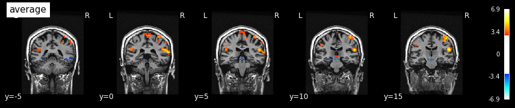
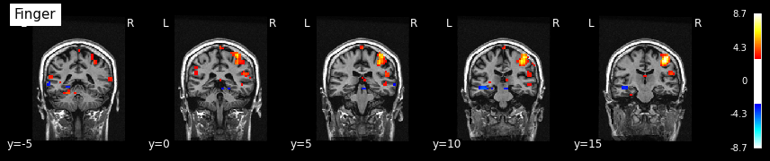
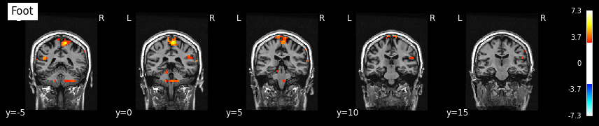
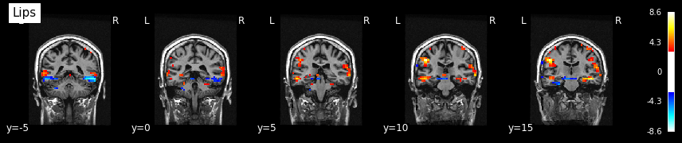
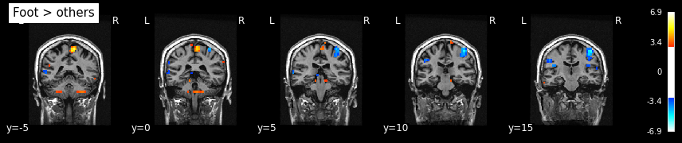
File spmF_0006.nii
This is an F-statistic map for a single F-contrast that tests the joint hypothesis. In our case \(H_0\): all 3 conditions (Finger, Foot, Lips) do not have an effect simultaneously.
A full model (with 3 regressors) and a reduced model (without them) are built for this contrast. The F-statistic for each voxel is: $\(F=\frac{(ESS_{full} - ESS_{reduced})/(rank_{full}−rank_{reduced})}{ESS_{reduced}/(n−rank_full)}\)$
where \(ESS\) – Explained Sum of Squares and \(n\) – number of time points.
The F-test answers the question: is there some activation in this voxel under at least one of the conditions? The result is a non-negative number with larger values indicate the presence of an effect.
contrast_id = 6
subject_id = '01'
plot_stat_map(
f'/output/datasink/1stLevel/sub-{subject_id}/spmF_000{contrast_id}.nii', title=test_to_number[contrast_id],
bg_img=anatimg, threshold=3, display_mode='y', cut_coords=(-5, 0, 5, 10, 15), dim=-1);
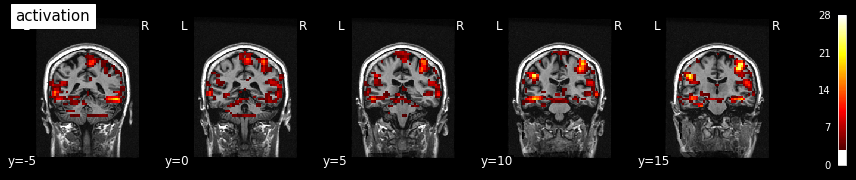
Sources:
General Linear Model for Neuroimaging
Special thanks to Michael Notter for the wonderful nipype tutorial